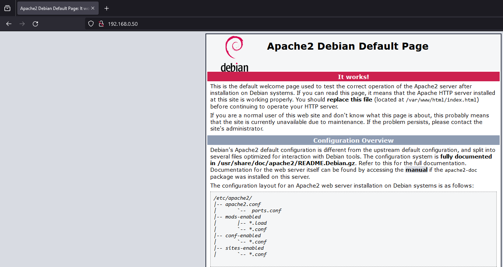
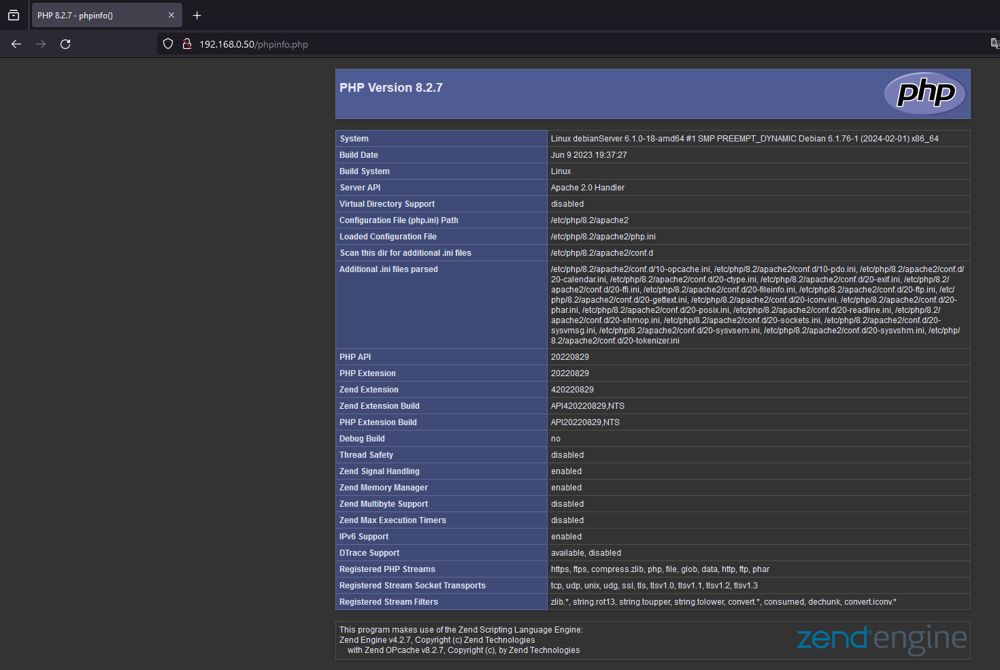
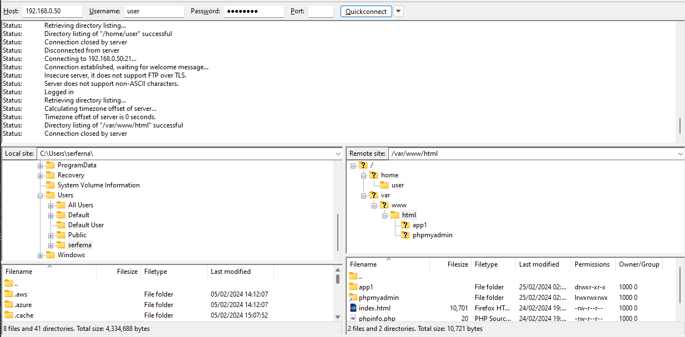
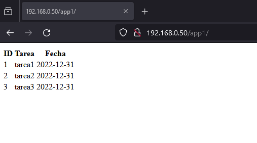
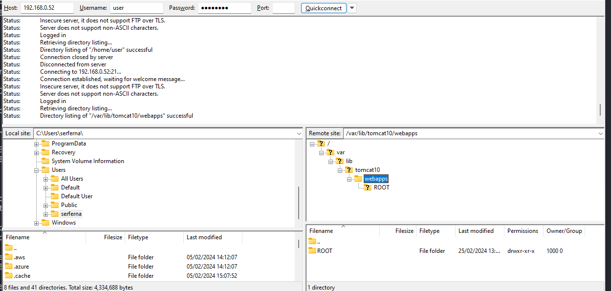
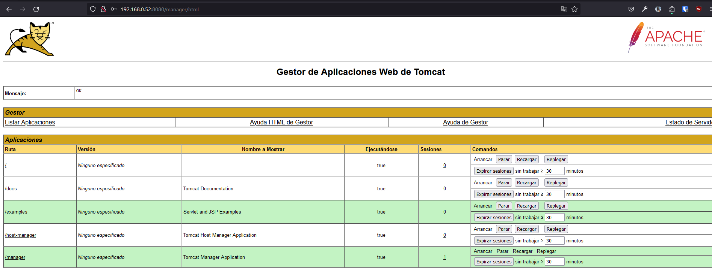
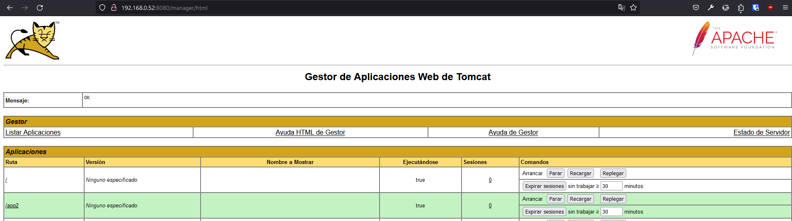
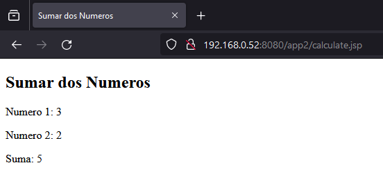
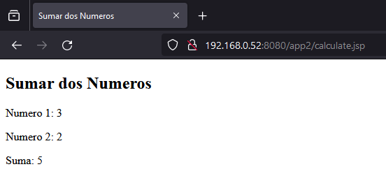

Para la realización de esta práctica se ha utilizado una máquina virtual con sistema Debian 12.
En orden de simular un equipo real, se esta usando de Network settings Bridged Adapter para que la máquina tenga su propia ip en la red.
debianServerusernamepasswordDurante la instalación del sistema no se han instalado ni entornos gráficos ni programas adicionales.
Se ha creado un usuario llamado username
Sistema Debian 12
Se inicia sesión con el usuario root
Se actualiza el sistema con el comando
apt update && apt upgrade -y
usernameapt install -y sudo vim net-tools passwd
username con el comandousermod -aG sudo username
username y comprobar que tiene permisos de sudo con el comandosu - username
sudo echo "hola"
sudo apt install -y ufw
sudo ufw enable
sudo apt install -y openssh-server
sudo systemctl status ssh
sudo ufw allow OpenSSH
sudo ufw allow ssh
sudo ufw reload
ssh -p 22 user@ip
Utilizar el comando sudo ufw status para comprobar que las reglas se han añadido correctamente.
Nos debe mostrar algo similar a esto:
user@debianServer:~$ sudo ufw status
Status: active
To Action From
-- ------ ----
OpenSSH ALLOW Anywhere
22/tcp ALLOW Anywhere
OpenSSH (v6) ALLOW Anywhere (v6)
22/tcp (v6) ALLOW Anywhere (v6)
sudo apt install -y vsftpd ftp
sudo ufw allow ftp
sudo ufw allow 20/tcp
sudo ufw allow 21/tcp
sudo ufw reload
Estado de la configuración del firewall
Status: active
To Action From
-- ------ ----
OpenSSH ALLOW Anywhere
22/tcp ALLOW Anywhere
21/tcp ALLOW Anywhere
20/tcp ALLOW Anywhere
OpenSSH (v6) ALLOW Anywhere (v6)
22/tcp (v6) ALLOW Anywhere (v6)
21/tcp (v6) ALLOW Anywhere (v6)
20/tcp (v6) ALLOW Anywhere (v6)
sudo systemctl status vsftpd
Poder ver el contenido de la carpeta /home/username desde el equipo local

Hasta este punto se ha configurado el sistema base con un firewall, un servidor SSH y un servidor FTP. Esto nos permitirá acceder al sistema de forma remota gracias al servicio SSH y subir archivos al sistema gracias al servicio FTP.
Para la aplicación 1 se ha decidido montar un servidor Apache encargado de alojar una aplicación web desarrollada con PHP.
sudo apt install -y apache2
sudo systemctl status apache2
sudo ufw allow http
sudo ufw allow 80/tcp
sudo ufw reload

sudo apt install -y php libapache2-mod-php
phpinfo.php en el directorio /var/www/html con el comandosudo echo "<?php phpinfo(); ?>" | sudo tee /var/www/html/phpinfo.php
sudo a2enmod php
/phpinfo.php para comprobar que php esta activo
sudo apt install -y mariadb-server
sudo mysql_secure_installation
sudo mysql
CREATE USER 'username'@'localhost' IDENTIFIED BY 'password';
GRANT ALL PRIVILEGES ON *.* TO 'username'@'localhost' WITH GRANT OPTION;
exit
mysql -u username -p
CREATE DATABASE app1;
USE app1;
CREATE TABLE tareas (id INT AUTO_INCREMENT PRIMARY KEY, tarea VARCHAR(100), fecha DATE);
INSERT INTO tareas (tarea, fecha) VALUES ('tarea1', '2022-12-31');
INSERT INTO tareas (tarea, fecha) VALUES ('tarea2', '2022-12-31');
INSERT INTO tareas (tarea, fecha) VALUES ('tarea3', '2022-12-31');
sudo systemctl restart apache2
sudo apt install -y phpmyadmin
apache2 como servidoryes para configurar la base de datossudo ln -s /usr/share/phpmyadmin /var/www/html/phpmyadmin
sudo phpenmod mbstring
sudo phpenmod mysqli
sudo service apache2 restart
/phpmyadmin para comprobar que phpmyadmin esta activo

Ya tenemos instalado el servidor ftp, ahora vamos a configurar el acceso a la aplicación.
/var/www/html con el comandosudo chmod 775 /var/www/html
sudo chown -R username /var/www/html
/etc/vsftpd.conf tiene las siguientes configuracioneslocal_umask=022
write_enable=YES
local_root=/var/www/html
chroot_local_user=YES

/var/www/html con el comandosudo mkdir /var/www/html/app1
index.php en el directorio /var/www/html/app1 con el comandosudo echo "<?php echo 'hola'; ?>" | sudo tee /var/www/html/app1/index.php
Acceder a la ip de la máquina virtual desde el navegador y añadir /app1 para comprobar que la aplicación esta activa
Modificar el archivo index.php para que se conecte a la base de datos
<?php
$servername = "localhost";
$username = "username";
$password = "password";
$dbname = "app1";
$conn = new mysqli($servername, $username, $password, $dbname);
if ($conn->connect_error) {
die("Connection failed: " . $conn->connect_error);
}
$sql = "SELECT id, tarea, fecha FROM tareas";
$result = $conn->query($sql);
if ($result->num_rows > 0) {
echo "<table><tr><th>ID</th><th>Tarea</th><th>Fecha</th></tr>";
while($row = $result->fetch_assoc()) {
echo "<tr><td>" . $row["id"]. "</td><td>" . $row["tarea"]. "</td><td>" . $row["fecha"]. "</td></tr>";
}
echo "</table>";
} else {
echo "0 results";
}
$conn->close();
?>
/app1 para comprobar que la aplicación esta activa
Subir el archivo index.php al directorio /var/www/html/app1
Acceder a la ip de la máquina virtual desde el navegador y añadir /app1 para comprobar que la aplicación esta activa
tomcat10 es la versión de Tomcat que se instalatomcat10-admin es la interfaz web para administrar Tomcattomcat10-common es la documentación y los archivos comunestomcat10-user es el usuario que ejecuta Tomcattomcat10-docs es la documentacióntomcat10-examples son ejemplos de aplicacionessudo apt install -y tomcat10 tomcat10-admin tomcat10-common tomcat10-user tomcat10-docs tomcat10-examples
sudo systemctl status tomcat10
sudo ufw allow 8080/tcp
sudo ufw reload
:8080 para comprobar que el servidor esta activo
sudo apt install -y mariadb-server
sudo mysql_secure_installation
sudo mysql
CREATE USER 'username'@'localhost' IDENTIFIED BY 'password';
GRANT ALL PRIVILEGES ON *.* TO 'username'@'localhost' WITH GRANT OPTION;
exit
mysql -u username -p
CREATE DATABASE app2;
USE app2;
CREATE TABLE tareas (id INT AUTO_INCREMENT PRIMARY KEY, tarea VARCHAR(100), fecha DATE);
INSERT INTO tareas (tarea, fecha) VALUES ('tarea1', '2022-12-31');
INSERT INTO tareas (tarea, fecha) VALUES ('tarea2', '2022-12-31');
INSERT INTO tareas (tarea, fecha) VALUES ('tarea3', '2022-12-31');
Ya tenemos instalado el servidor ftp, ahora vamos a configurar el acceso a la aplicación.
/var/lib/tomcat10/webapps con el comandosudo chmod 777 /var/lib/tomcat10/webapps
sudo chown -R username /var/lib/tomcat10/webapps
/etc/vsftpd.conf tiene la siguiente configuraciónlocal_umask=022
write_enable=YES
local_root=/var/lib/tomcat10/webapps
chroot_local_user=YES
sudo systemctl restart vsftpd

/etc/tomcat10/tomcat-users.xml con el comandosudo vim /etc/tomcat10/tomcat-users.xml
Descomentar la sección que contiene el usuario y la contraseña
<user username="admin" password="<must-be-changed>" roles="manager-gui"/>
<user username="robot" password="<must-be-changed>" roles="manager-script"/>
sudo systemctl restart tomcat10
:8080/manager/html para comprobar que la interfaz de administración de Tomcat esta activa
/var/lib/tomcat10/webapps con el comandosudo mkdir /var/lib/tomcat10/webapps/app2
index.jsp en el directorio /var/lib/tomcat10/webapps/app2 y añadir el código<!DOCTYPE html>
<html>
<head>
<title>Sumar dos Números</title>
</head>
<body>
<h2>Sumar Números</h2>
<form action="calculate.jsp" method="post">
Número 1: <input type="text" name="num1"><br>
Número 2: <input type="text" name="num2"><br>
<input type="submit" value="Calcular Suma">
</form>
</body>
</html>
calculate.jsp en el directorio /var/lib/tomcat10/webapps/app2 y añadir el código
<%@ page import="java.io.*,java.util.*" %>
<%@ page import="javax.servlet.*,javax.servlet.http.*" %>
<%
// Se obtienen los parametros del formulario
String num1Str = request.getParameter("num1");
String num2Str = request.getParameter("num2");
// Se convierten los parametros a enteros
int num1 = Integer.parseInt(num1Str);
int num2 = Integer.parseInt(num2Str);
// Se realiza la suma
int sum = num1 + num2;
%>
<!DOCTYPE html>
<html>
<head>
<title>Sumar dos Numeros</title>
</head>
<body>
<h2>Sumar dos Numeros</h2>
<p>Numero 1: <%= num1 %></p>
<p>Numero 2: <%= num2 %></p>
<p>Suma: <%= sum %></p>
</body>
</html>

:8080/app2 para ver la aplicación 

Subir el archivo index.jsp y calculate.jsp al directorio /var/lib/tomcat10/webapps/app2
Acceder a la ip de la máquina virtual desde el navegador y añadir /app2 para comprobar que la aplicación esta activa
Reiniciar el servidor Tomcat con el comando
sudo systemctl restart tomcat10
De forma base se ha configurado un servidor Debian 12 con un firewall, un servidor SSH y un servidor FTP.
Sobre este sistema se han montado dos aplicaciones web.
La primera aplicación se ha montado sobre un servidor Apache con PHP y MySql.
La segunda aplicación se ha montado sobre un servidor Tomcat con MySql.